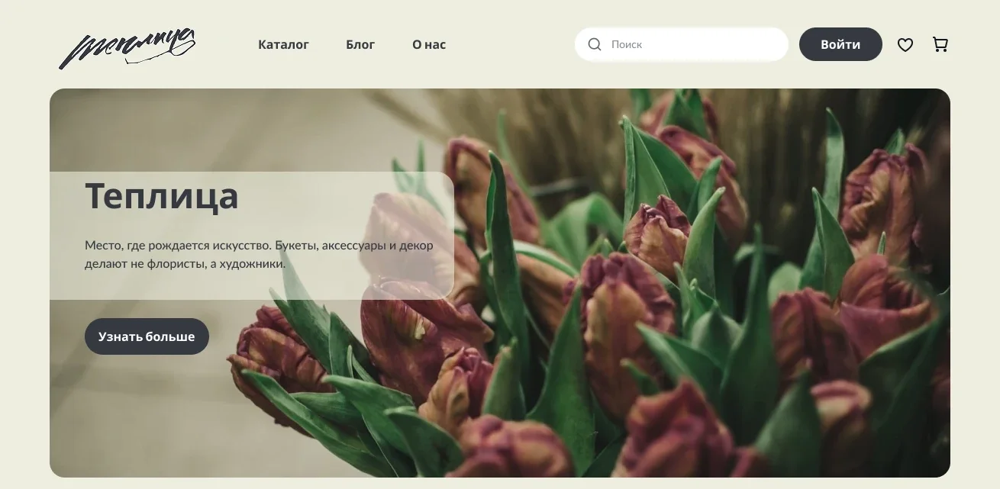
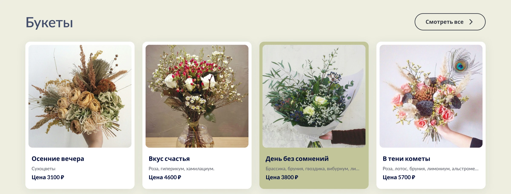
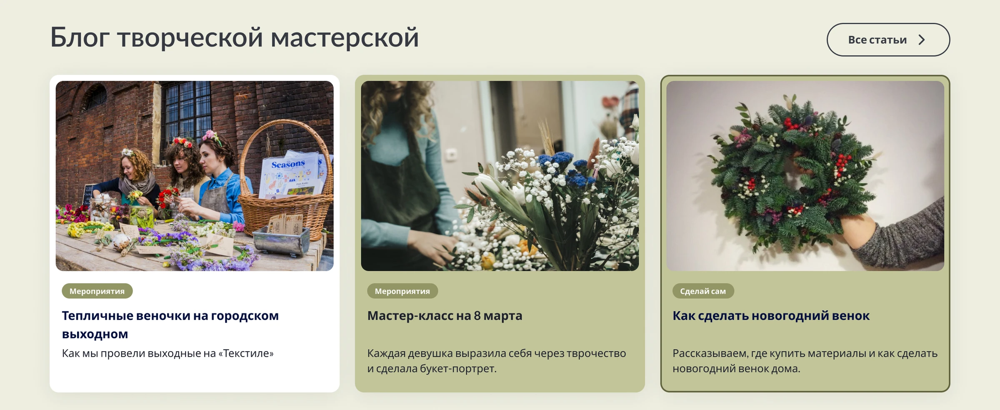
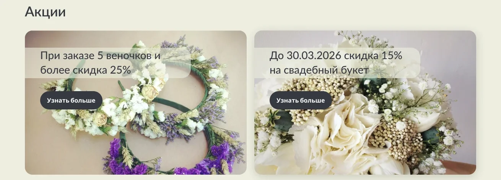
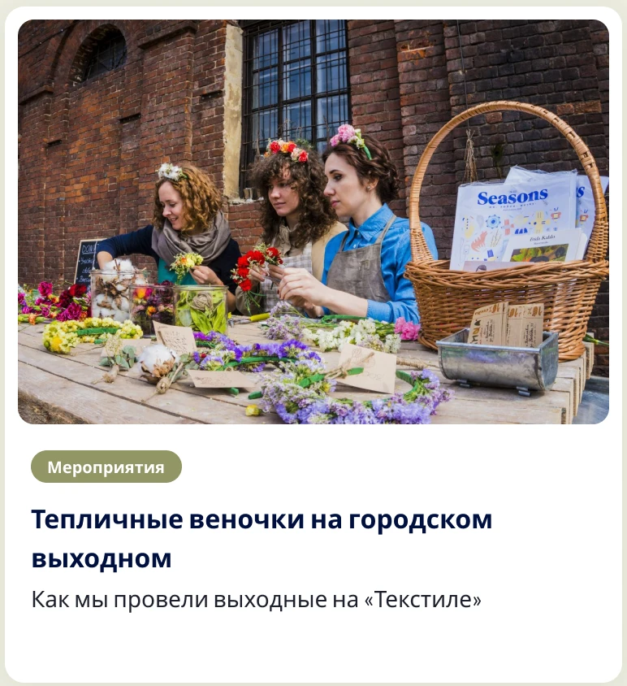
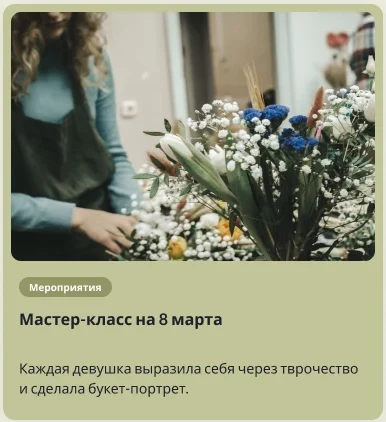
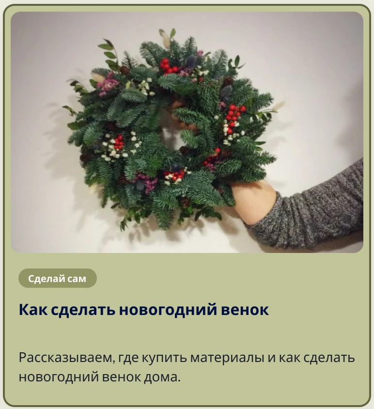
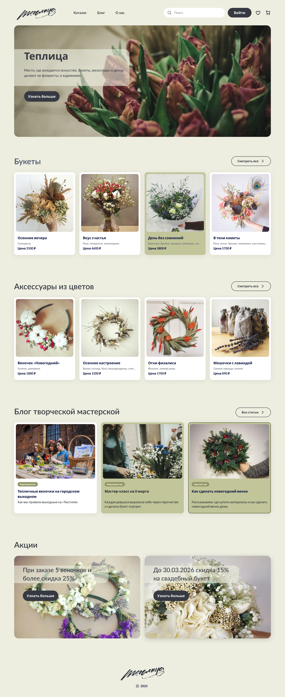

Теплица
Магазин цветочной мастерской, где букеты, аксессуары и декор делают не флористы, а художники.

01 — О проекте
Как продавать искусство и не потерять покупателя
Задача
Спроектировать главную страницу интернет-магазина на компонентах UI-кита: меню, баннер, подборки товаров, статей и акций — с сеткой, логикой отступов и состояниями элементов.
Аудитория
Люди, которые ищут необычный подарок, и те, кто хочет сам научиться собирать букеты и венки на мастер-классах.
Идея
Витрина как прогулка по мастерской: сначала настроение, потом букеты и аксессуары, затем жизнь сообщества и выгодные предложения.
Вызов
Сетка одинаковых роз не расскажет, чем мастерская особенная
Каждый букет здесь — авторская работа с именем и историей, а мастерская живёт событиями. Нужно было найти баланс между атмосферой галереи и простотой интернет-магазина.
02 — Требования
Чек-лист, по которому я проверяла макет
Перед сдачей прошлась по каждому пункту — это помогает не потерять мелочи вроде состояний и выравнивания по сетке.
- Макет содержит меню, баннер, подборки товаров, статей и акций
- Используются компоненты и стили из UI-кита
- Тексты и изображения подходят тематике магазина
- Стилистика соответствует тематике сайта — с обоснованием
- Все объекты выровнены по сетке, в отступах есть логика
- Добавлены состояния карточек и баннеров при наведении и клике
03 — Структура
От схемы блоков — к витрине
Настроение и позиционирование. «Место, где рождается искусство» — сразу объясняет, чем мастерская отличается от обычного цветочного.
Две витрины: букеты и аксессуары по 4 позиции с переходом «Смотреть все». Недорогие аксессуары легко добавить к заказу.
Блог мастерской: мероприятия и инструкции «Сделай сам» формируют сообщество и приводят на мастер-классы.
Конкретная выгода с условием и сроком — финальный аргумент перед покупкой.
04 — Решения
Галерея, в которой удобно покупать
У каждого букета — имя и состав
«Осенние вечера», «В тени кометы» — названия подчёркивают авторский характер. Под ними состав и цена: покупатель понимает, за что платит.
- Фото на светлом фоне — букет главный
- Длинный состав обрезается многоточием — сетка не ломается

Мастерская, которая живёт событиями
Статьи про мастер-классы и инструкции «Сделай сам» с тегами помогают сориентироваться и приводят людей на офлайн-встречи.

Выгода читается сразу
«Скидка 25% при заказе 5 веночков», «−15% на свадебный букет до 30.03» — условие и срок на крупной карточке с кнопкой.

05 — Состояния компонентов
Карточка отвечает на каждое действие
Для карточек и баннеров сделала варианты состояний: интерфейс подсказывает, что элемент кликабельный, и подтверждает нажатие.



06 — Визуальный язык
Палитра сухоцветов и рукописный логотип
Фон цвета небелёного льна, оливковый акцент и графитовые кнопки создают ощущение крафтовой мастерской. Рукописный логотип — как подпись художника на работе.
Лён
#EEEEE0
Фон страницы
Олива
#C3C597
Hover, теги
Графит
#37393F
Кнопки, текст
Карточка
#FFFFFF
Карточки товаров
07 — Итог
Магазин с характером галереи
Макет целиком
Нажмите «+», чтобы открыть макет целиком

Нужен магазин, который передаёт характер бренда и при этом удобен для покупки? Давайте обсудим.